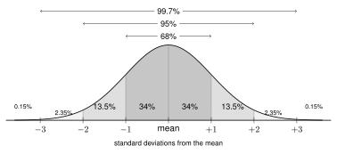
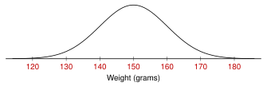

Measure the heights of thousands of adult women. The histogram makes a smooth bell shape.
Data like this has a normal distribution.
A normal distribution:
- is bell-shaped and symmetric
- has the mean and the median in the center (they are equal)
- is described by two numbers: the mean (center) and the SD (spread)
A larger SD makes the curve wider and flatter. A different mean moves the curve left or right.
The empirical rule (68-95-99.7 rule)

About 68% of the data is within 1 SD of the mean.
About 95% of the data is within 2 SDs of the mean.
About 99.7% of the data is within 3 SDs of the mean.
Example: Heights of adult women have a mean of about 64 inches and an SD of about 3 inches.
| Percent from 61 to 67 inches | 68% (within 1 SD) |
| Percent from 58 to 70 inches | 95% (within 2 SDs) |
| Percent taller than 67 inches | |
| Percentile of 67 inches | , the 84th percentile |
Tip: Draw the curve and label it every time. Then add up the parts you need.
2.4 Normal Distributions and the Empirical Rule - Practice
Work with a partner. Compare answers when you finish each problem.
1. The weights of apples from one orchard have a normal distribution. The mean is 150 grams and the SD is 10 grams.
Label the number line with the weights.

About what percent of the apples weigh:
from 140 to 160 grams? 68%
from 130 to 170 grams? 95%
more than 160 grams?
less than 130 grams?
from 150 to 170 grams?
from 130 to 160 grams?
2. A phone battery lasts a mean of 20 hours with an SD of 2 hours. The times have a normal distribution.
Between what two times do the middle 95% of batteries last?
to hoursWhat percentile is 22 hours?
, the 84th percentileAbout what percent of batteries last less than 16 hours? 2.5%
- A battery lasts 27 hours. Is that unusual? Explain.
Yes. 27 is 3.5 SDs above the mean. Almost no batteries (less than 0.15%) last that long.
3. In a normal distribution, what percentile is a value with each z-score?
th percentile th percentile th percentile
4. The three curves are normal distributions.
Which two curves have the same mean? A and B (both 8)
Which curve has the largest SD? Explain. B. It is the widest and most spread out.
- How are A and C the same? How are they different?
Same SD (same width and shape). Different means: A is centered at 8, C at 16.
5. Would each data set have a normal distribution? Explain.
The heights of all adult men in Missouri. Yes. Heights are bell-shaped and symmetric.
The yearly income of every household in the US. No. Income is skewed right.
Scores on a very easy test. No. Most scores are high, so it is skewed left.